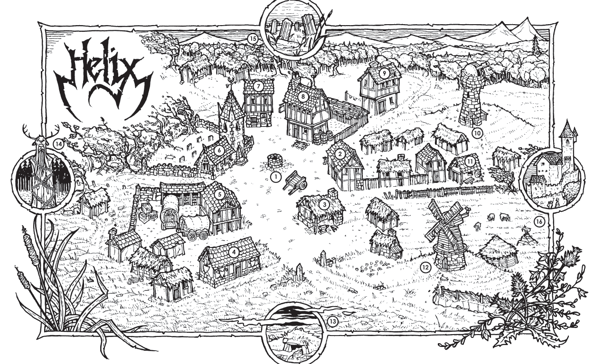

Scarlet Horizons
Scarlet Horizons
Helix Village
back to Maps Index

- Village Square & Marketplace
- Turgen's Trade Goods
- The Axe & Anvil
- Mercenary Guild
- The Silver Standard Merchant Caravan Company
- Shrine of St. Ygg
- The Rosy Quartz Jeweler and Money Lender
- The Brazen Strumpet (Tavern & Inn)
- The Foul Pheasant
- Wizard's Spire
- Bowyer/Fletcher
- Hendon's Mill
- Barrowmaze
- Statue of Herne
- Ancient Ruins
- Ironguard Motte